Screens
Every screen at a glance. For the full button list see Controls.
Song List
The first screen: your songs, most recently opened first (or A to Z - Select switches). Five buttons below the list: Open, New, Copy, Delete, Help.
- Copy (or X) duplicates the whole song - file and samples - into a new song named the next free variant (
Afterglow->Afterglow 2), selects it, and says so (Afterglow->Afterglow 2). - Delete asks first; Copy never touches the original, so it doesn't.
- New opens the name-entry keyboard; Open loads the song under the cursor.
Song
The arrangement. Columns are the 8 tracks, rows are time. Each cell holds a chain number, or -- for nothing.
- Everything on one row starts together.
- Rows play top to bottom; each track loops back to the top of its block when it reaches
--. - While playing, the strip at the bottom shows each track's current note and instrument.
- The eight thin bars to the right of the grid are level meters, one per track: the track you're on is highlighted, muted tracks go dim, and a bar gets an amber cap when it's close to full.
Bookmarks and sections
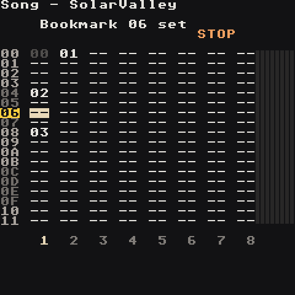
A + Select bookmarks the row the cursor is on (again: removes it). A bookmarked row's number turns into an amber tag. LB + Up/Down jumps to the next or previous place a part starts: a bookmark, or the first chain of a block on the track you're on (a chain right under an empty cell). The screen says which it found (Bookmark 20, Section 10). Bookmarks are saved with the song, and B + Select undoes them like any edit.
Moving tracks
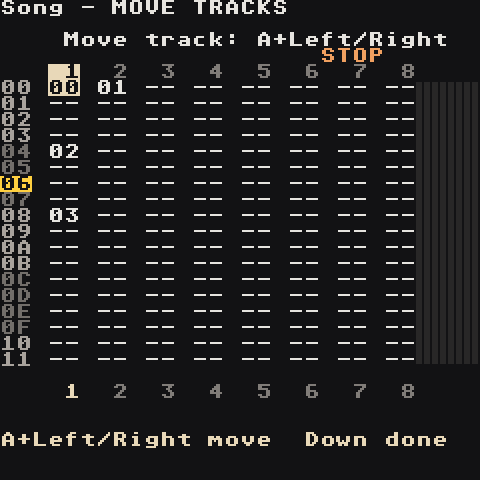
On row 00, press Up once more: the title says MOVE TRACKS and the track numbers appear above the grid. Left/Right picks a track, A + Left/Right carries it past its neighbour, with its chains on every row, its mixer fader and its mute. Down (or B) goes back to the grid. Stop the song first; the screen tells you if it's playing.
Live mode
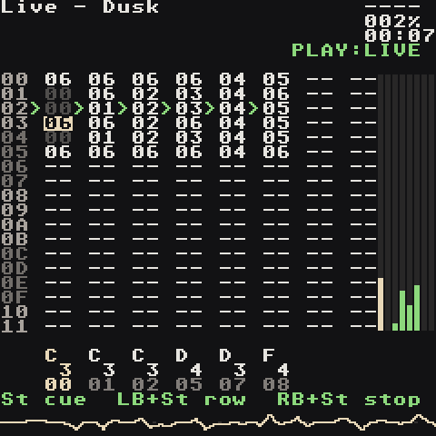
Select turns the Song screen into a clip launcher. Start on a cell cues that chain on its track (it blinks green until it starts, then loops), LB + Start cues the whole row, RB + Start toggles the whole song, B + Start stops everything. The buttons are listed at the bottom of the screen. Full table: Controls → Live mode.
Chain
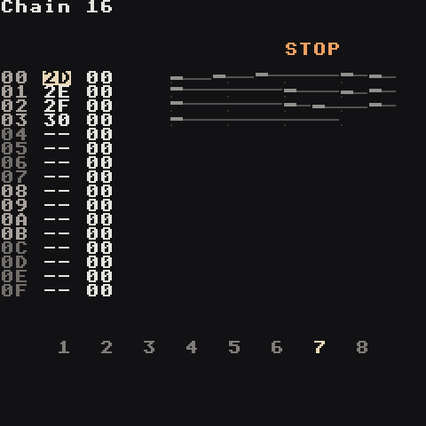
One track's playlist of bars. Left column: phrase number. Right column: transpose in semitones (0C = up an octave, F4 = down an octave).
Next to each row is a tiny piano roll of that row's phrase, so you can see the melody or rhythm of every bar without opening it. The row that's playing lights up, with a playhead moving across it.
Phrase
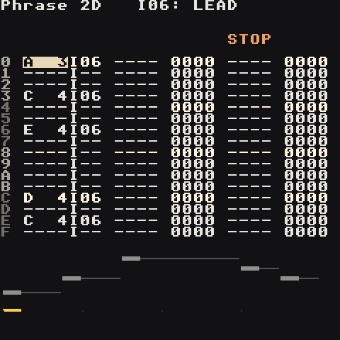
One bar, 16 steps. Columns:
- Note —
C 3,----for none - Instrument —
I00…I7F; the name of the instrument under the cursor shows in the title - Command 1 + value
- Command 2 + value
Step numbers are one digit, 0–F. Beat rows (0 4 8 C) are highlighted so you can see the grid, and the playing step lights up as a green tab.
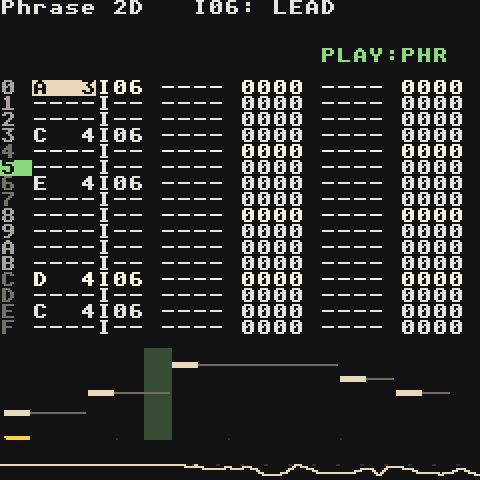
Under the grid is a piano roll of the whole bar: each note sits at its pitch, with a thin line until the next note or KILL. A playhead follows playback and an amber mark shows the step your cursor is on. The line at the very bottom is a live waveform of the output.
Instrument (synth)
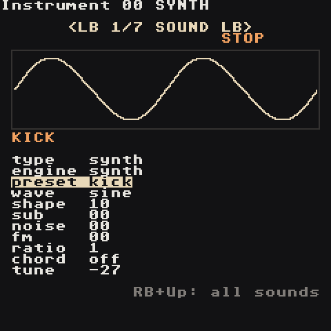
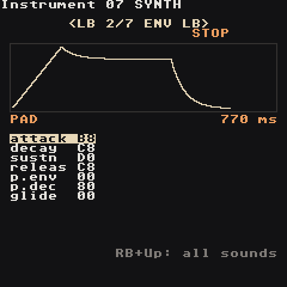
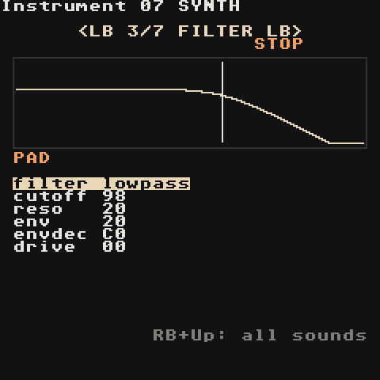
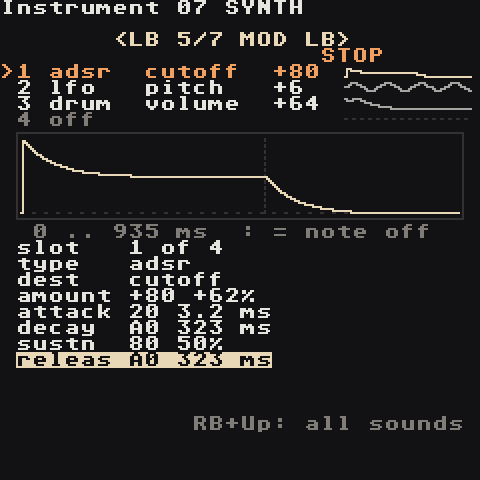
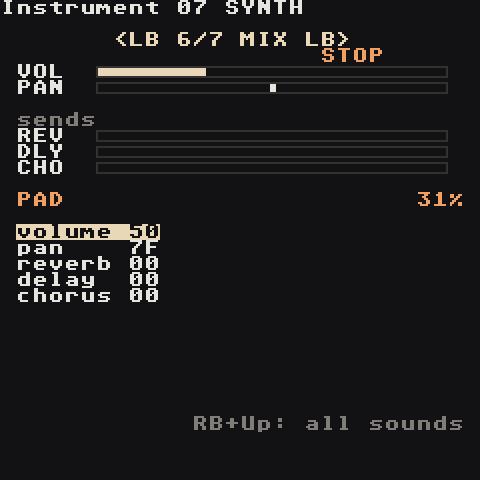
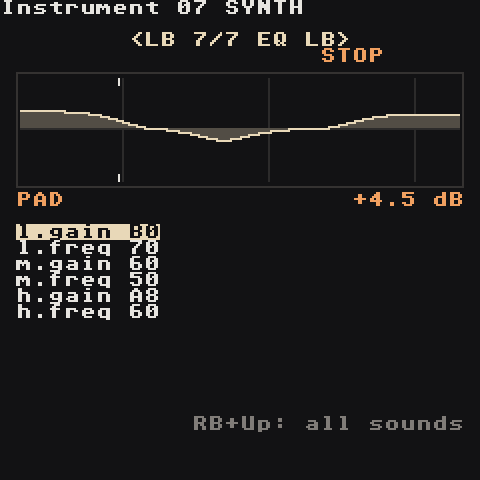
Seven pages (SOUND, ENV, FILTER, LFO, MOD, MIX, EQ), switched with LB + Left/Right. The top half draws what the page does — waveform, envelope, filter curve, LFO, modulation, levels, EQ curve — and shows the preset name and the focused value in real units (32 ms, 641 Hz). The knobs are listed below. Full details on the Synth page.
The first row, type, switches the slot between synth, sample and macro — the Macro Synth: 47 synthesis models played with two knobs, timbre and color. It has the same pages; SOUND and the 4th page (MOTION) are its own.
Instrument list
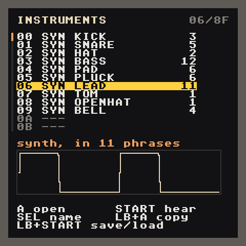
RB + Up on the Instrument screen opens every instrument at once: number, type (SMP, SYN, MAC, MID, --- for an empty slot), name, and how many phrases use it. A green dot marks instruments that are playing right now, and the box underneath draws the selected sound: a sample's waveform, a synth's wave shape, or a macro synth's model output.
| Button | Does |
|---|---|
| Up / Down | pick an instrument (Left/Right jump a page) |
| A | open it on the Instrument screen |
| Start | hear it; Start again stops |
| Select | give it a name with the on-screen keyboard (clear the name to go back to the automatic one) |
| LB + A | copy it into the next free slot, to make a variation |
| LB + Start | My sounds: save or load sounds and kits (below) |
| B | back |
Rack
RB + Left on the Song opens the Rack: every sound of the song on one screen, with a picture of the selected one and a one-octave keyboard in the song's scale. Hold A to play the sound, A + Left/Right to step through the scale, A + Up/Down for octaves, and Select to browse presets, samples and your saved sounds by ear, Start for a riff that suits the sound. RB + Right edits the sound (RB + Left on the Instrument screen comes back), RB + Down goes to a phrase to write notes with it, LB + Start saves and loads sounds and kits. See Build Your Sounds First.
My sounds
LB + Start on the instrument list opens your own sound library. It lives on the card in Applications/Sounds, outside any song, so what you save there is there in every song.
| Choice | Does |
|---|---|
| Save sound 05 | keeps the selected sound as a file, under a name you give it (a sample sound takes a copy of its WAV) |
| Load a sound into 05 | puts one of your saved sounds in the selected slot |
| Save this kit | keeps all of this song's sounds, each in its slot |
| Load a kit | replaces all of this song's sounds with a saved kit (asks first) |
| New songs: this kit | every new song starts with this song's sounds instead of the starter kit |
| New songs: starter kit | back to the built-in starter kit |
Up/Down picks, A chooses, B goes back one step (from a list to the menu, from the menu to the instrument list). A sound's table comes with it.
Instrument (sample)
Sample instruments have seven pages too: Source, Shape, Filter, Loop, Mod, Motion, EQ, with a waveform and start/loop/end markers. See Samples.
Table
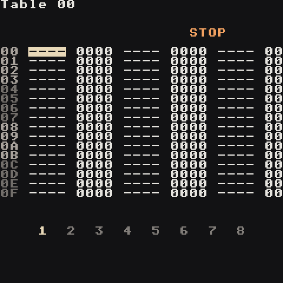
Three command columns that step one row per tick and loop. Tables run on their own once triggered — by TABL in a phrase, or automatically by an instrument (table on the synth LFO page or the sample Motion page). Use them for arpeggios, stutters, pitch wobbles and filter wiggles you don't want to write note by note.
Groove
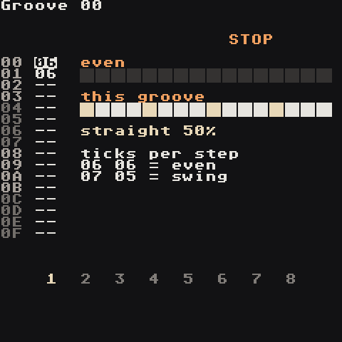
How many ticks each step lasts, cycling. 06 06 is straight. 07 05 swings (long-short). 08 04 shuffles hard. Groove 00 is used by default; the GROV command switches a track to another groove.
The ruler on the right draws one bar twice: an even grid on top, and this groove underneath with each step as wide as its ticks. Late offbeats are the swing. Under it the feel is named in plain words (straight, swing 58%), and the step that's playing turns green.
Project
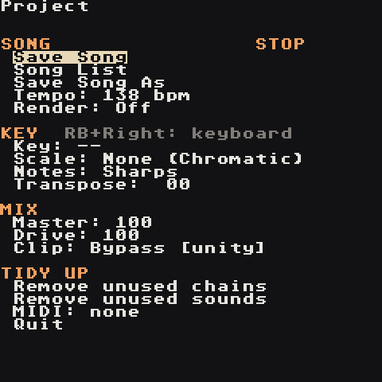
| Field | What |
|---|---|
| Tempo | BPM |
| Master / Drive | output level / level into the soft clipper |
| Clip | soft clipper strength (Bypass … Insane) |
| Transpose | shifts every note in the song |
| Key / Scale / Notes | note-editing helper and sharp/flat spelling; RB + Right shows them on a keyboard (Scale) |
| Song List / Save Song / Save Song As | back to the song list (offers to save first), save, save a copy (names it, then switches you to working on the copy - the title bar shows which song you're in, and the original is left exactly as it was) |
| Remove unused chains / sounds | tidy up chains, phrases and instruments nothing uses |
| Quit | leave the app (offers to save first) |
| Render | Stereo or Stems, then Start to export (Export) |
Scale
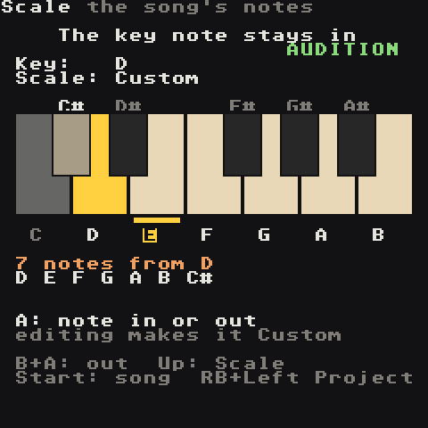
RB + Right from Project. The song's Key and Scale on top, one octave of piano keys below: the notes of the scale are lit, the key note is amber. Under the keyboard the scale is spelled out (7 notes from D, D E F G A B C#).
- Up/Down moves between
Key,Scaleand the keyboard; A + D-pad changes Key and Scale as on Project. - On the keyboard, Left/Right picks a note and A puts it in or out of the scale (you hear it when it goes in). B + A takes it out. The key note always stays in.
- Editing a scale makes it the song's own
Customscale (the last one in the list), starting from the notes of the scale you had. It is saved with the song and moves with the Key. - Phrase note editing (A + Left/Right), the random-notes tool (LB + Right on a selection) and
RANDall stay on the lit keys. TheSCALcommand switches Key and Scale while the song plays (Commands).
Mixer
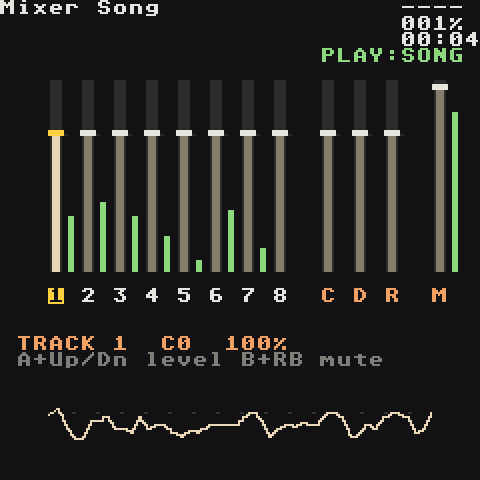
Faders for the 8 tracks, the three effect returns (C chorus, D echo, R reverb) and the master (M), each with a live level meter, plus the master waveform. Levels save with the song. When the limiter is on, a white line hangs from the top of the master meter as long as it is limiting (12 dB = half the meter), and the master line reads LIM -3.2dB.
| Input | Does |
|---|---|
| Left/Right | pick a strip |
| A + Up/Down | fader big step (C0 = unity, up to FF for a boost) |
| A + Left/Right | fader fine step |
| B + RB / A + RB | mute / solo the track (RB + LB unmutes all) |
| RB + Down | FX screen |
FX
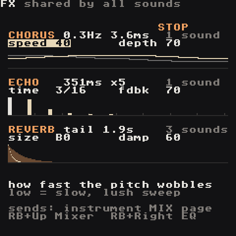
The three effects every instrument can send to, each with a picture of what it does (RB + Right goes on to the EQ):
| Effect | Knobs | Picture |
|---|---|---|
| Chorus | speed (0.1–5 Hz), depth (0.5–7.5 ms) |
the left and right delay sweeps |
| Echo | time in 16ths (3 = dotted 8th), fdbk repeats |
the dry hit and each echo over two bars |
| Reverb | size, damp |
the tail over four seconds; the bright line is the highs, which damp takes away faster |
Each heading shows the real values (Hz, ms, tail length) and how many sounds send to it. Up/Down walks the six knobs, A + D-pad edits. Turn up an instrument's chorus/delay/reverb send to hear it; the Mixer's C/D/R faders set how loud each effect comes back.
EQ
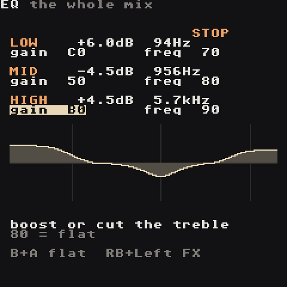
A three-band EQ on the whole mix, after the effects: RB + Right from FX.
| Band | Knobs | Shape |
|---|---|---|
| LOW | gain, freq (30–400 Hz) |
a shelf: everything below freq up or down |
| MID | gain, freq (150 Hz–6 kHz) |
a wide bell around freq |
| HIGH | gain, freq (1.5–16 kHz) |
a shelf: everything above freq |
gain 80 is flat; each step is about 0.1 dB, from −12 to +12 dB. The heading shows the real values, and the curve underneath shows the result from 20 Hz to 20 kHz (marks at 100 Hz, 1 kHz, 10 kHz). Up/Down picks a knob, A + D-pad edits, B + A puts a knob back. It saves with the song; a flat EQ costs nothing.
Try: low +3 dB at 80 Hz for weight, mid −3 dB at 400 Hz to clear mud, high +2 dB at 8 kHz for air.
RB + Right goes on to the limiter. Every instrument also has an EQ of its own, on its EQ page.
Limit
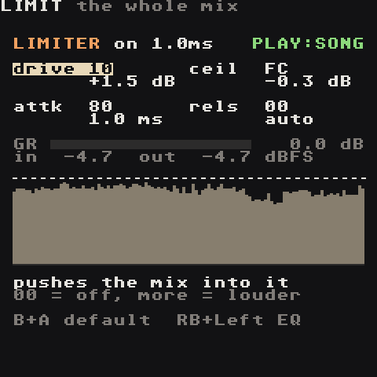
The master limiter, RB + Right from EQ (like the M8's LIM): it keeps the whole mix under a ceiling, so you can make it louder without it clipping. It comes after the EQ; the Project's clip (soft clip) and master volume come after it.
| Knob | Does | Values |
|---|---|---|
drive |
pushes the mix into the limiter | 00 = off (the default), 01 = 0 dB .. FF = +25.4 dB |
ceil |
the loudest the mix may get | 00 = −25.5 dB .. FF = 0 dB, default FC = −0.3 dB |
attk |
how far it looks ahead: the gain is already down when a peak arrives | 0.1–10 ms, default 80 = 1 ms |
rels |
how fast it lets go afterwards | 00 = auto (100–900 ms: slower the harder it works), 01 = 4 ms .. FF = 1 s |
Under the knobs, the red GR bar shows how many dB it is taking off right now, with the peak going in (after drive) and coming out. The scope below scrolls the last few seconds: the mix level rises from the bottom, the limiting hangs from the top in red, the dotted line is the ceiling.
Up/Down picks a knob, A + D-pad edits, B + A puts a knob back (drive back to off), RB + Left returns to EQ. With drive 00 the mix passes untouched; switched on, it delays the whole mix by the look-ahead (1 ms by default).
Try: drive +3 to +6 dB with rels on auto. A few dB of GR on the loudest hits is transparent; if it pumps, lower drive or lengthen rels.
Helper (RB + Select)
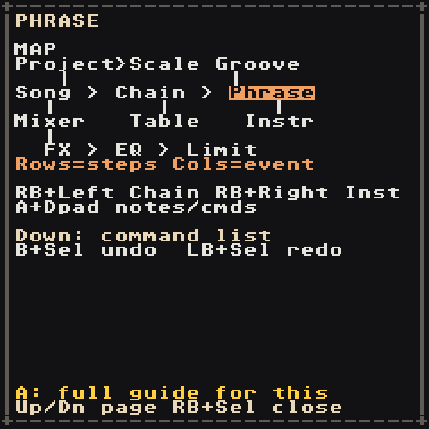
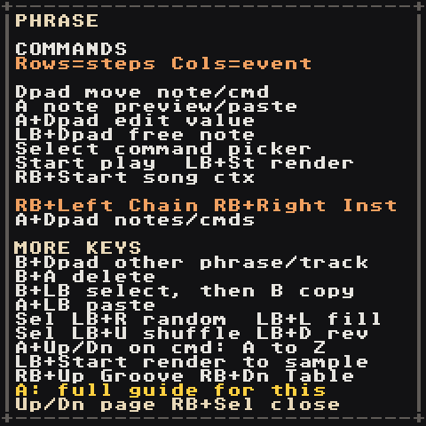
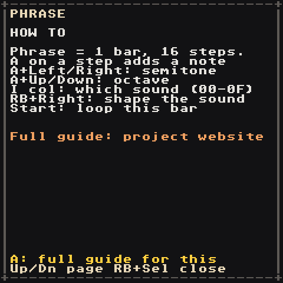
Available on every screen and dialog, full screen. Down/Up (or Left/Right) flips between:
- Map — where you are and where RB + direction goes, plus the undo keys
- Controls — every key and combo that does something here, grouped
- Read the screen — every label, column and abbreviation on this screen explained
One table (tools/quickguide/data.py) drives all three pages and this wiki, so they can't drift apart; a test checks every key tools/sweep/table.py says does something on a screen against that screen's Controls page. Per-screen quick guide text: Quick guide reference.
On any page, A opens the built-in guide at the section for the current screen. B or RB + Select closes it.
While the helper is open, other buttons are ignored, so you can't change anything by accident.
Quick guide reference
Generated from tools/quickguide/data.py by tools/quickguide/generate.py for every screen and dialog's RB+Select overlay; do not edit the blocks below by hand.
SONG
Read the screen (SONG): Cell = a chain number, or -- for nothing A row: everything on it starts together A track loops its block back to top at the next -- 8 bars right of the grid: level meters, one per track (current track lit, muted tracks dim, amber cap near full) Amber tag on a row number = a bookmark While playing: strip at the bottom shows each track's current note + instrument
SONG - LIVE
Read the screen (SONG - LIVE): Same grid as Song, but a cued cell blinks green until it starts A track keeps looping its chain until re-cued: leave drums on the verse while bass moves to the chorus Top-right PLAY:LIVE label shows Live is active
SONG - MOVE TRACKS
Read the screen (SONG - MOVE TRACKS): Track numbers appear above the grid; title reads MOVE TRACKS Stop the song first: the screen says so if it's still playing
CHAIN
Read the screen (CHAIN): Left column: phrase number, -- for none Right column: transpose in semitones (0C = up an octave, F4 = down an octave) Tiny piano roll next to each row previews that phrase's melody/rhythm Playing row lights up with a moving playhead
PHRASE
Read the screen (PHRASE): Columns: Note (C 3, ---- = none), Instrument (I00..I7F, name shows in the title), Command 1 + value, Command 2 + value Command 3 + value Row numbers 0-F; beat rows (0 4 8 C) are highlighted Playing step: green tab Below the grid: a piano roll of the bar (note pitch, tail to next note or KILL), amber mark = cursor step, bottom line = live output waveform
INSTRUMENT - SAMPLE
Read the screen (INSTRUMENT - SAMPLE): Focused field: the selected knob is explained using its current shape, engine, modulation type and value. type field switches sample / synth / macro Pages: SOURCE (sample, play mode, root note), SHAPE (level/grit), FILTER, LOOP (markers), MOD, MOTION, EQ Waveform with start/loop/ end markers on SOURCE/LOOP play mode: fwd/rev/loop/ pingpong/oscillator Real-unit values shown next to the focused knob (32 ms, 641 Hz) sample: loaded WAV file. play: fwd forward, rev reverse, loop repeats, pingpong bounces, oscillator cycles. root: pitch of original sample. detune: fine pitch. slices: equal regions for SLIC commands. vol: sound level. pan: stereo position. reverb/delay/chorus: send levels to shared FX. crush: bit depth. drive: distortion. down: sample- rate reduction. interp: smooth sample playback. cut: filter cutoff. reso: resonance peak. type: filter blend. mode: filter mode. atten: output gain. start: first sample. lstart: loop begins. lend: sample ends. S/L/E mark start/loop/end on waveform. PREV ONCE/LOOP: preview repeats or plays once. LB+Start changes preview only on SOURCE/LOOP. auto: run the instrument table on each note. table: command sequence. fb tun: feedback pitch. fb mix: feedback amount. MOD slot: one of four modulation sources. type: ahd, adsr, drum, lfo, trig, track. dest: what it changes. amount: depth. attack/hold/decay/releas: envelope times. sustn: held level. body: drum hold. peak: transient dip. rate: LFO speed. shape: LFO waveform. mode: free/retrigger/hold/once. track: trigger source track. from/to: low/high input notes. low/high: output values at those notes; intermediate notes interpolate. EQ l.gain/m.gain/h.gain: bass/middle/treble boost. 80 is flat. l.freq/m.freq/h.freq: band frequencies. Hex numbers use 0-9 and A-F. Real units: ms milliseconds, s seconds, Hz cycles/second, kHz thousands of Hz.
INSTRUMENT - SYNTH
Read the screen (INSTRUMENT - SYNTH): Focused field: the selected knob is explained using its current shape, engine, modulation type and value. type field switches sample / synth / macro engine picks the synth model (SOUND page) Pages: SOUND ENV FILTER LFO MOD MIX EQ Top half draws what the page does: waveform, envelope, filter curve, LFO shape, levels, EQ curve Preset name + focused value shown in real units preset: ready-made sound. wave: oscillator shape. shape: tone colour. sub: lower octave. noise: hiss level. fm: frequency modulation amount. ratio: modulation pitch ratio. chord: extra pitches. tune: semitones. fine: cents. attack: fade-in time. decay: fall to sustain. sustn: held level. releas: fade after note ends. p.env: initial pitch jump. p.dec: pitch decay time. glide: slide between pitches. filter: filter type. cutoff: cutoff frequency. reso: peak at cutoff. env: filter envelope depth. envdec: its decay. drive: saturation. lfo: destination. rate: wobble speed. depth: wobble amount. auto: start table on note. table: command sequence. volume: level. pan: stereo position. reverb/delay/chorus: sends to shared effects on FX screen. FM4 algo: operator routing. Operator ratio sets frequency, level sets depth, feedback adds harmonics. Hyper chord: six pitches. swarm: detune spread. width: stereo spread. sub: lower octave. scale: snap to song scale. Wav wave: base shape. size: steps per cycle. mult: repeats per cycle. warp: squeeze shape. mirror: middle position. limit: drive clipping shape. Hyper shift: crossfade notes 1-3 into 4-6. Wav middle: mirror position. Drum model: 808/909 voice. tone: brightness. decay: ring time. snap: attack/noise. accent: hit strength. Phys model: modal/string. matter: material. bright: mallet/pick tone. decay: ring time. strike: hit strength. MOD slot: one of four modulation sources. type: ahd, adsr, drum, lfo, trig, track. dest: what it changes. amount: depth. attack/hold/decay/releas: envelope times. sustn: held level. body: drum hold. peak: transient dip. rate: LFO speed. shape: LFO waveform. mode: free/retrigger/hold/once. track: trigger source track. from/to: low/high input notes. low/high: output values at those notes; intermediate notes interpolate. EQ l.gain/m.gain/h.gain: bass/middle/treble boost. 80 is flat. l.freq/m.freq/h.freq: band frequencies. Hex numbers use 0-9 and A-F. Real units: ms milliseconds, s seconds, Hz cycles/second, kHz thousands of Hz. FM4 A/B/C/D: four operators. shape: waveform. ratio: pitch multiple. level: volume or modulation depth. fbk: feedback. atk/dec/sus: attack, decay, sustain. Hyper six signed numbers: note offsets in semitones. chord fills them; editing makes a custom chord.
INSTRUMENT - MACRO
Read the screen (INSTRUMENT - MACRO): Focused field: the selected knob is explained using its current shape, engine, modulation type and value. type field switches sample / synth / macro Macro synth: 47 models played with 2 knobs, timbre and color SOUND and MOTION are its own pages; the rest are shared with Synth preset: ready-made sound. wave: oscillator shape. shape: tone colour. sub: lower octave. noise: hiss level. fm: frequency modulation amount. ratio: modulation pitch ratio. chord: extra pitches. tune: semitones. fine: cents. attack: fade-in time. decay: fall to sustain. sustn: held level. releas: fade after note ends. p.env: initial pitch jump. p.dec: pitch decay time. glide: slide between pitches. filter: filter type. cutoff: cutoff frequency. reso: peak at cutoff. env: filter envelope depth. envdec: its decay. drive: saturation. lfo: destination. rate: wobble speed. depth: wobble amount. auto: start table on note. table: command sequence. volume: level. pan: stereo position. reverb/delay/chorus: sends to shared effects on FX screen. timbre/color: model-specific tone controls. shape: synthesis model. degrade: lower sample rate. redux: fewer bits. t.env/c.env: note-triggered timbre/color jump. tc.dec: time for those jumps to decay. MOD slot: one of four modulation sources. type: ahd, adsr, drum, lfo, trig, track. dest: what it changes. amount: depth. attack/hold/decay/releas: envelope times. sustn: held level. body: drum hold. peak: transient dip. rate: LFO speed. shape: LFO waveform. mode: free/retrigger/hold/once. track: trigger source track. from/to: low/high input notes. low/high: output values at those notes; intermediate notes interpolate. EQ l.gain/m.gain/h.gain: bass/middle/treble boost. 80 is flat. l.freq/m.freq/h.freq: band frequencies. Hex numbers use 0-9 and A-F. Real units: ms milliseconds, s seconds, Hz cycles/second, kHz thousands of Hz.
INSTRUMENT - MIDI
Read the screen (INSTRUMENT - MIDI): A MIDI slot sends notes out instead of making sound itself: no A+Start preview device / channel / program fields pick where notes go
INSTRUMENT TABLE
Read the screen (INSTRUMENT TABLE): Three command columns, one row per tick, loops Runs on its own once triggered by the instrument (table on LFO/Motion page) Same layout as the Phrase table: use it for filter wiggles, pitch wobble
TABLE
Read the screen (TABLE): Three command columns, one row per tick, loops Triggered by TABL in a phrase, or by an instrument automatically Use for arpeggios, stutters, pitch wobbles, filter wiggles you don't want to write note by note
GROOVE
Read the screen (GROOVE): 06 06 = straight 07 05 = swing (long-short) 08 04 = heavy shuffle Groove 00 is the default; GROV command switches a track to another one Ruler on the right: even grid on top, this groove underneath, step widths = ticks; playing step is green Feel named in words below (straight, swing 58%)
PROJECT
Read the screen (PROJECT): Four groups: SONG (save, song list, tempo, render), KEY (key, scale, notes, transpose), MIX (master, drive, clip), TIDY UP (remove unused, quit) Render shows the export mode and, while exporting, Rendering started/done Save Song writes current edits. Save Song As creates a separate song with these edits and all samples, then opens it. Song List Copy duplicates the selected saved version.
SCALE
Read the screen (SCALE): Key and Scale fields on top One octave of piano keys below: scale notes lit, key note amber Under the keys: the scale spelled out (7 notes from D, D E F G A B C#) Editing a key makes a Custom scale (last in the list); key note always stays in
MIXER
Read the screen (MIXER): 8 track strips, then C chorus, D echo, R reverb, M master Each strip: live level meter; master also shows a waveform Limiter on: white line hangs from the master meter's top while limiting, master line reads LIM -3.2dB
FX
Read the screen (FX): Chorus: speed (0.1-5 Hz), depth (0.5-7.5 ms) - the L/R delay sweeps Echo: time in 16ths (3 = dotted 8th), fdbk repeats - dry hit + echoes over 2 bars Reverb: size, damp - the tail over 4 s, bright line is the highs damp removes Heading shows real values + how many sounds send to it Turn up an instrument's chorus/delay/reverb to hear it; Mixer's C/D/R set how loud it comes back
EQ
Read the screen (EQ): LOW: gain, freq (30-400 Hz) shelf, everything below freq up/down MID: gain, freq (150 Hz- 6 kHz), a wide bell HIGH: gain, freq (1.5-16 kHz), shelf above freq gain 80 = flat, +/-12 dB; curve underneath shows 20 Hz-20 kHz result
LIMIT
Read the screen (LIMIT): drive: pushes into the limiter, 00 = off (default) ceil: loudest the mix may get, default FC = -0.3 dB attk: look-ahead; rels: how fast it lets go Red GR bar: dB it's taking off now; scope below scrolls the last few seconds, dotted line = the ceiling drive 00: mix passes untouched
RACK
Read the screen (RACK): List columns: index, kind (SMP/SYN/MAC/MID), name, how many phrases use it Green dot: playing right now Box under the list draws the selected sound: waveform, wave shape, or macro output One-octave keyboard in the song's scale, for A to play
INSTRUMENT LIST
Read the screen (INSTRUMENT LIST): Columns: number, type (SMP SYN MAC MID, --- empty), name, how many phrases use it Green dot: playing right now Box under the list draws the selected sound
SOUND BROWSER
Read the screen (SOUND BROWSER): Title: SOUND FOR
SAMPLE BROWSER
Read the screen (SAMPLE BROWSER): A scrollable file/folder list; the highlighted entry previews (or is the button row: Listen/Import/Record) normalize, crop, fade and reverse live on the sample editor this opens into
MY SOUNDS
Read the screen (MY SOUNDS): Lives outside any song, in Applications/Sounds on the card - what you save is there in every song A sound's table comes with it when saved or loaded
SONG LIST
Read the screen (SONG LIST): One row per saved song; the button row (New, ...) is part of the same list Sel flips the sort between name order and most-recently played Open, New, Copy, Delete, Help are the action buttons. Copy creates and selects a separate saved song with its samples; the original stays unchanged.
NAME THE SONG
Read the screen (NAME EDITOR): Keys are alphabetical, not QWERTY: the next letter is always one press away The suggested random name is highlighted; typing replaces it name taken = a song with that name already exists
RECORD SAMPLE
Read the screen (RECORD SAMPLE): Shows the input device list, then a level meter while armed/recording, then the recorded waveform to accept or drop
SAMPLE EDITOR
Read the screen (SAMPLE EDITOR): Title SAMPLE EDIT, I
COMMAND PICKER
Read the screen (COMMAND PICKER): A grid of every command, grouped; the highlighted one is named at the top with what its letters mean
RENDER TO SAMPLE
Read the screen (RENDER TO SAMPLE): A progress bar while it plays the phrase or chain once and records the mix New sample lands on the first free instrument slot
QUESTION
Read the screen (QUESTION): The question on top, the button row (Yes/No, or similar) below, one highlighted
MENU
Read the screen (MENU): MENU heading, rows with inline < value% > steppers for Volume/Brightness, then Song List, Save and quit, Quit don't save (asks first), Debug tools
Read the screen (FULL GUIDE): Title names topic/section Contents: guide topics Index: keys and commands Go to: links on this page Coloured text is a link Right bar: reading position
Read the screen (DEBUG TOOLS): Audio Input Monitor and System Info currently log selection; no panel opens Exit Debug: back to menu Highlighted row is selected
Read the screen (EXIT QUESTION): Save before leaving? Highlighted answer chooses whether work is saved B cancels; song stays open
Read the screen (STARTUP): Piggy build: app version Load or create a song in the Song list to begin
Read the screen (CONSOLE): Text lines are diagnostics No song fields on this view